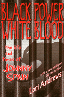

A struggle to transcend race and find justice
A struggle to transcend race and find justice


 A struggle to transcend race and find justice
A struggle to transcend race and find justice

|  |
Black Power, White BloodThe Life and Times of Johnny SpainWith a New Epilogue by the AuthorLori Andrewspaper EAN: 978-1-56639-750-6 (ISBN: 1-56639-750-2) |
"Powerful [and] inspirational. A moving journey through a black activist's turbulent life."
—Kirkus Reviews
Originally published in hardcover to much acclaim, this vividly written biographical drama will now be available in a paperback edition and includes a new epilogue by the author. Conceived within a clandestine relationship between a black man and a married white woman, Spain was born (as Larry Michael Armstrong) in Mississippi during the mid-1950s. Spain's life story speaks to the destructive power of racial bias. Even if his mother's husband were willing to accept the boy—which he was not—a mixed-race child inevitably would come to harm in that place and time.
At six years old, already the target of name-calling children and threatening adults, he could not attend school with his older brother. Only decades later would he be told why the Armstrongs sent him to live with a black family in Los Angeles. As Johnny came of age, he thought of himself as having been rejected by his white family as well as by his black peers. His erratic, destructive behavior put him on a collision course with the penal system; he was only seventeen when convicted of murder and sent to Soledad.
Drawn into the black power movement and the Black Panther Party by a fellow inmate, the charismatic George Jackson, Spain became a dynamic force for uniting prisoners once divided by racial hatred. He committed himself to the cause of prisoners' rights, impressing inmates, prison officials, and politicians with his intelligence and passion. Nevertheless, among the San Quentin Six, only he was convicted of conspiracy after Jackson's failed escape attempt.
Lori Andrews, a professor of law, vividly portrays the dehumanizing conditions in the prisons, the pervasive abuses in the criminal justice system, and the case for overturning Spain's conspiracy conviction. Spain's personal transformation is the heart of the book, but Andrews frames it within an indictment of intolerance and injustice that gives this individual's story broad significance.
Excerpt available at www.temple.edu/tempress
"Johnny Larry Spain crossed the grassy plaza of San Quentin with the measured steps necessitated by his leg irons. The soft umbrella of his Afro shaded his face from the July sun's glare. His hands were cuffed in front of him, attached to his waist chain by heavy links of soldered metal. A few prisoners from the mainline excitedly caught sight of him and raised their fists in the Black Power salute. It was a grave gesture—greeting Spain in any way could subject them to weeks in solitary confinement.
"The guard behind him gave a tug on the chain attached to the dog collar around Spain's neck, directing him to the nearby van. One by one, Spain and the other members of the San Quentin Six boarded. They were Fleeta Drumgo, Hugo Pinell, Willie Tate, David Johnson, and Luis Talamantez—strong black and brown men who had come of age in the California prison system, and whose actions had set it on its head. The escort cars from the police and sheriff's departments took their place. As they headed down Highway 101, Johnny could hear a whir of helicopter blades. Johnny turned to Fleeta, on the seat behind him.
"'We've got more security than the president,' he said.
"It was July 28, 1975, the opening day of their trial, and the whale-shaped Marin County Civic Center was surrounded by demonstrators. We're no longer some fringe element, or some ghetto gang, thought Johnny. The size of the crowd made that clear. As the van sped through the parking lot, Johnny eyed the Black Panthers in their uniforms of black pants, powder blue shirts, black leather jackets, and black berets. With them were movement whites, men with long hair and women with short skirts, the clothes he noticed in the television coverage of anti-war demonstrations. Shit, our ideas could work! People believe in us."
--From the Prologue
"In simple direct prose, Lori Andrews captures a life lived as the crossroads of this century's most volatile and vexing issues—race, violence, justice, and redemption."
—David B. Wilkins, Kirkland & Ellis Professor of Law, Harvard Law School
"A compelling story—a boy's perceived abandonment by his mother results in crimes motivated by anger. Remorse for murder results in increasing commitment to Black Panther ideology, and finally redemption through a recognition of his need and capacity to take responsibility for his own life. A parable for our time."
—Wayne Kerstetter, Criminologist, University of Illinois at Chicago
"There is no better book about the Black Panther Party than Lori Andrews' shocking, gripping, and moving account of the tumultous life of Johnny Spain. Black Power, White Blood never shies away from hard facts and harsh realities, offering an unparalleled view of the prison system, its impact on young Black men, and the politics it produces among those it incarcerates."
—George Lipsitz, author of The Possessive Investment in Whiteness
Prologue
Chapters 1 through 35
Epilogue
Epilogue to the new Edition: Understanding Johnny
Acknowledgments
Index
About the Author
 | Lori Andrews teaches at Chicago-Kent Law School and has been named one of the 100 Most Influential Lawyers in America by the National Law Journal. One of the foremost experts on the policy of genetics and reproduction, she is author of The Clone Age: Adventures in the New World of Reproductive Technology. |
Race and Ethnicity
Law and Criminology
African American Studies
© 2015 Temple University. All Rights Reserved. This page: http://www.temple.edu/tempress/titles/1495_reg.html.